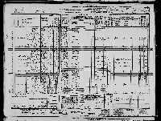

Charles Thomas Foster
25 July 1874 – 13 November 1962
Quick Facts
Immediate Family
Parents
- William Lowery Foster (1843/1845–1927)
- Mary Elisabeth “Mollie” Justice (1845/1846–1932)
Children
- Ora Foster Campbell (1898–1988)
- Rosa/Rose Foster Witt
- Ernest Foster
- Clyde Foster
- Grace A. Foster Bell
- Bess Foster Bell
- William Foster
- Short Foster
- Stillborn child (1913)
- Mae Foster Farris
Siblings
- George Eli Foster
- Robert John Foster
- James E. Foster
- Frankling Foster
Family Relationship Notes
Public FamilySearch profiles for Charles and Mary agree on their marriage and daughter Ora. Charles’s Find a Grave memorial also links Mary as his spouse and Ora as their daughter. The other children are named in the FamilySearch family timeline and linked family lists; the 1913 stillborn entry has no name or sex in the timeline. These are compiled/user-contributed sources, not original parent-child records.
FamilySearch and Find a Grave give slightly different birth years for Charles’s parents: William Lowery Foster is 1843 or 1845, and Mary Elisabeth “Mollie” Justice is 1845 or 1846. The differences are retained rather than silently reconciled. The visible FamilySearch excerpt names four siblings; the full profile lists nine, with five not visible in the material reviewed.
The existing hero image is retained as the memorial attachment, but its contents could not be independently inspected because the image host returned HTTP 403. The profile’s source gallery thumbnails are also retained as thumbnails, not treated as readable original records.
On Family Tree Sites
Couple Folder
Life Timeline
25 July 1874 Born in Casey County, Kentucky, per FamilySearch and Find a Grave.
1 December 1897 Married Mary Cordellia Williams in Casey County, Kentucky, per published FamilySearch couple profiles; original marriage record not reviewed.
1898–1914 FamilySearch couple timeline places ten children in the household, including Ora, born 1898, and a stillborn child in 1913. Compiled family group.
1930–1940 Lived in Dunnville, Casey County, in compiled FamilySearch profile; source entries include 1940 census.
13 November 1962 Died in Liberty, Casey County; buried Salem United Methodist Church Cemetery, per published FamilySearch profile and Find a Grave.
Life Story
Charles Thomas Foster was born and lived in Casey County, Kentucky. The public FamilySearch profile and Find a Grave memorial agree on his dates, Casey County/Liberty locations, burial, spouse Mary Cordellia Williams, and daughter Ora. Both sites are compiled or user-contributed genealogical profiles rather than an original vital record. The family grouping includes ten children; one stillborn entry appears in the FamilySearch timeline.
Photo Gallery


Sources and Evidence
- FamilySearch, Charles Thomas Foster, LZR4-M8M: dates, parents, marriage, children, residence and burial; published profile lists 28 sources, only visible source cards inspected. Compiled profile.
- Find a Grave, Charles Thomas Foster, Memorial 18113826: dates, Salem UMC burial, wife Mary, daughter Ora and family links; marker photo attributed to Tanya Whited. User-contributed memorial.
- FamilySearch, Mary Cordellia Williams, LZR4-MDH: spouse-and-children profile agrees on their marriage and daughter Ora; compiled profile.
- FamilySearch visible source cards: 1940 U.S. Census and Kentucky County Marriages; thumbnail copies preserved at original returned pixel dimensions. Underlying original record images not reviewed.
Research Notes and Open Questions
- FamilySearch gives father William Lowery’s birth as 1843 and mother Mollie Justice’s birth as 1845; Find a Grave gives 1845 and 1846. Preserve date discrepancies; do not choose without direct records.
- Marriage on 1 December 1897 comes from public FamilySearch profiles; original marriage bond/register has not been inspected.
- FamilySearch 1940 census card is only a thumbnail. Original census image and exact household line not examined in this turn.
- Parent-child links to Ora and the other named children are currently reported from public compiled profiles and linked memorials; obtain direct birth/census/obituary records for stronger proof.
DNA
No DNA matches linked yet.
Family Notes
Research notes and source inventory are in the couple folder’s Notes directory; no Google Docs were created or edited.
An American Bloodline · Generation VII